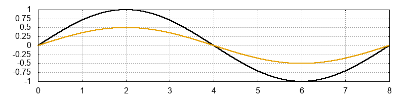

Considerando a senoide em preto a nossa referência. Assinale a alternativa correta de acordo com as características de amplitude e frequência das senoides.

A segunda senoide possui 1/2 (metade) da amplitude da senoide referência e possui a mesma frequência dela.
A segunda senoide possui 3/4 (três quartos) da amplitude da senoide referência e possui a mesma frequência dela.
A segunda senoide possui a mesma amplitude da senoide referência e possui 1/2 (metade) da frequência dela.
A segunda senoide possui a mesma amplitude da senoide referência e a mesma frequência dela.